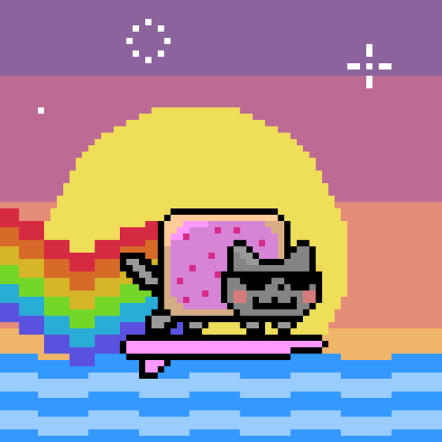

#0001 · retro-nyan-cat.png · first resident of the archive.
Archive of screenshots, memories & pixels.
This is where I’ll drop photos, screenshots, race pics, and random moments from student-athlete life. Right now it’s small, but it’ll grow as I add more memories.
